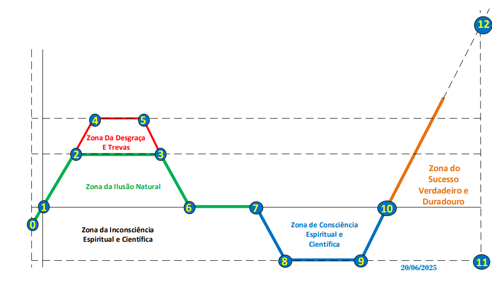

DA DESGRAÇA A PLENITUDE DO
SUCESSO

Por : Osvaldo Mutuque
AS 12 ETAPAS QUE MOLDAM O
DESTINO HUMANO
INTRODUÇÃO GERAL
A vida humana é marcada por processos.
Ninguém chega à plenitude por acaso, assim como ninguém se perde de um dia para o outro. São as escolhas, as influências, os hábitos, as crenças e as experiências acumuladas ao longo do tempo que moldam o destino de cada pessoa.
Ao observar diferentes histórias de vida, percebemos que existem padrões comuns. Algumas pessoas crescem, amadurecem e constroem vidas sólidas; outras
permanecem presas aos mesmos ciclos, repetindo erros e vivendo sem direcção. Há quem alcance sucesso exterior, mas continue vazio por dentro, enquanto outros transformam as suas crises em oportunidades de crescimento, maturidade e propósito.
Foi a partir desta reflexão que nasceu o conceito apresentado nesta obra: O Mapa de uma Vida de Sucesso.
Este mapa representa uma visão estruturada da jornada humana, desde a sua origem até à plenitude do sucesso. O seu propósito é ajudar o leitor a compreender melhor a sua própria vida, identificar padrões, reconhecer a fase em que se encontra e perceber como determinadas escolhas podem aproximá-lo ou afastá-lo do seu verdadeiro propósito.
Ao longo destas páginas, veremos que cada etapa possui significado e influência sobre as seguintes. Uma identidade mal formada afecta decisões futuras; feridas não tratadas comprometem relacionamentos; a falta de disciplina limita o crescimento. Da mesma forma, a revelação produz direcção, o preparo gera estrutura, a restauração conduz à maturidade e princípios sólidos sustentam uma prosperidade duradoura.
Para facilitar a compreensão desta jornada, o livro está organizado em três grandes partes. A primeira aborda a Génese, apresentando a origem, o propósito e os fundamentos da existência humana. A segunda explora as etapas da desgraça, revelando os processos de ilusão, desordem e crise que frequentemente afastam o homem do seu propósito. A terceira introduz os fundamentos da construção, mostrando o caminho que conduz ao crescimento, à maturidade e ao verdadeiro sucesso.
Este Volume I concentra-se principalmente na compreensão das origens da desordem humana e no início do processo de reconstrução interior. Os princípios mais profundos relacionados com a sustentação da plenitude serão desenvolvidos no Volume II, As 7 Leis da Plenitude do Sucesso.
Mais do que apresentar conceitos, esta obra é um convite à reflexão. Talvez te identifiques com algumas das etapas aqui descritas. Talvez compreendas melhor certas dores, escolhas ou desafios que tens enfrentado. Talvez descubras que aquilo que parecia ser o fim era, na verdade, o início de uma transformação.
Independentemente da fase em que te encontras, existe uma verdade fundamental que acompanha todo este livro: nenhuma etapa da vida é inútil quando correctamente compreendida. Até as crises podem ensinar, as quedas podem revelar verdades e os momentos mais difíceis podem tornar-se pontos de viragem.
Porque o verdadeiro sucesso não nasce apenas das boas oportunidades nem simplesmente das boas conexões. Embora ambas sejam importantes, sem uma sólida formação interior é possível perdê-las. O verdadeiro sucesso nasce daquilo que é construído no interior do ser humano, pois é a qualidade do carácter, da mente e dos valores que sustenta e preserva as conquistas ao longo da vida.
Antes de compreenderes plenamente para onde vais, talvez precises primeiro de compreender onde estás e como chegaste até aqui.